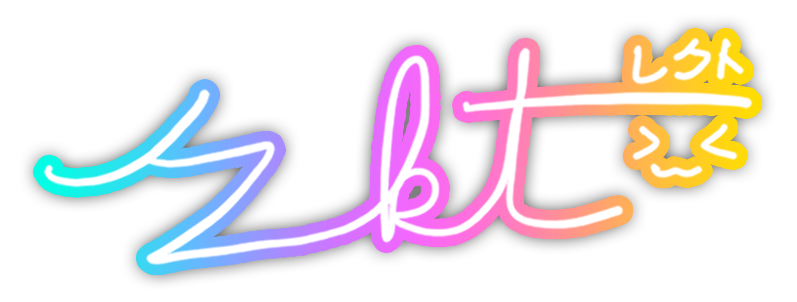

last updated: 2026-08-02
hey! o/
my name is Jacob, and i go by r_kt (rekt) online,
but i also go by rek(y)uto and beisudoroppu as well depending on username availability :)
i am currently doing my undergrad studies at UCSD,
initially for Computer Science, but decided to switch to ICAM.
alongside my major i am also minoring in ICAM Music and Computer Science.
i made this site because after i took my AP exam for Computer Science Principles back in 2023,
my teacher decided to teach us basic web development for the rest of the school year.
at the end of the school year, i implemented a simple about me page using basic HTML and CSS through CodeHS,
which you can no longer see :(
because of that class, it inspired me to use that page as a basis implement my own personal site.
so before i went on my Japan trip, i bought the domain rekuto.moe,
and started working on this site.
ever since then, i have been maintaining this site for fun :)
when i am not drowning in school work, i speedcube competitively for fun,
and have been doing so since 2019.
i also love playing rhythm games, especially osu! and maimai.
as of writing this i have peaked at rank #361 globally in osu!, and my peak rating was 15119 in maimai.
if you wish to contact me, the easiest way would be through Discord (r_kt),
since i always have it running on my laptop/PC.
if you do wish to send me an email, you can do so here.
thank you for visiting!
made in love | kafka emotes by HoYoverse | custom proseka stickers by SEGA | source
